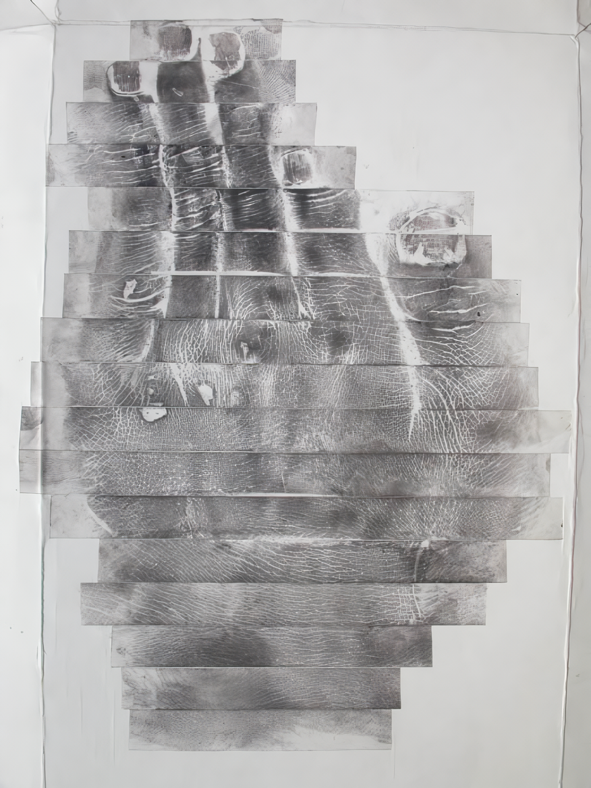

잃어버린 시간들
김성수, 이응기
2009_0603 ▶ 2009_0624 / 월요일 휴관

작가와의 대화
2009_0624_수요일wed_07:00pm
관람시간 11:00 a.m.-6:00 p.m.
보충대리공간 스톤앤워터
supplement space STONE & WATER
경기도 안양시 만안구 석수2동 286-15번지 2층
Tel. +82.31.472.2886
www.stonenwater.org
사람들은 살아가면서 피부에 많은 그림들을 그려 놓는다. 갓난아기 조카 녀석들의 곱고 뽀얀 얼굴 위에 붙여진 대일 밴드 속의 흉터나, 장난꾸러기 막내였던 나를 키우느라 나무토막 혹은 붕어 비늘 껍질처럼 된 아버지, 어머니의 손 주름, 예술 한답시고 화를 이기지 못한 채 작업실 바닥에 키스 한 나의 주먹, 그 손등위의 상처, 혹은 한껏 과시용으로 비계 덩어리 물 근육에 구겨 넣어져야 했던 친구들의 문신이나 아름다움에 뒤쳐지지 않기 위해 눈두덩이 위에 칼집 내어 찢긴 눈, 뺑소니를 쫓다가 사고 난 교통경찰의 이마 등…. 이들 모두는 이유야 어떻게든 살아가면서 만들어내고 만들어진 조각품이자 그림인 셈이다.
■ 이응기